LL Buchanan Lake
The trees...
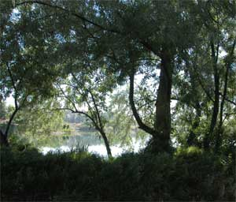
What? You do not yet see the grandeur of a beautiful sageland lake, the shore graced with sprawling old oaks, chestnuts, cedars, ents and giant sequoias, as though a scene from the Lord of the Rings?
Patience.
From small acorns, great oaks grow. Acorns are affordable.
When the water filled the gravel pit in 1997, it created a new shoreline vegetative zone. In addition to the native Cottonwood, Black Locust, Russian Olive, Slippery Elm and Willow, which began growing at the new water line, a diverse variety of seedlings are being planted each year. Certain tree and shrub species are being planted to provide seed food sources for wildlife. The shore is protected from people-use, to benefit the wildlife and vegetation. It will become an arboretum.
The rocky soil, or just bare rocks, makes the tree project a bit of a challenge, for the trees and the guy who digs the holes to plant the trees. Usually the holes are dug with a hand shovel, but on good years a small back hoe is rented from the fine folks at Pape' Machinery, not far from the lake.
The beaver, roving the area from their home in the Swan Pond, and arriving from the adjacent Yakima River, ply their wood cutting trade in the dark of night. They are not content with the plentiful willows. The beaver take down every broadleaf tree that is not protected with fencing, including thorny young locust. The planted seedling trees are protected with plastic planting tubes while the seedlings are still very small, then wire fencing the moment before they get big enough to be put on the beaver menu. Beaver usually cut the better trees before they get large, so many neglected gravel pit ponds in beaver areas are left with a perpetually brushy shoreline, less than visually pleasing. Old gravel pit pond shores are also usually trampled by people, precluding wildlife habitat. Protecting the trees from beaver costs much more in time and money than planting trees.
The plan for this lake shore is to protect the faster growing native trees to establish a visually pleasing tree habitat, annually plant more interesting and wildlife-beneficial trees, progressively trim the willows, and progressively replace most of the native trees with arboretum varietals. Part of the north shore is irrigated. An irrigation system for more shore is in the plans, when it becomes affordable.
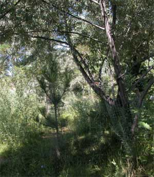
Until then, the trees around most of the lake must survive in cobble rocks near the shoreline water table. The lake water table fluctuates a couple feet with the seasonal flow of the adjacent Yakima River, which can leave new small tree roots either too dry or drowned, especially arboretum varietals not adapted to riverine habitat. Interesting challenge. But with patience, tolerance for frustrations, and water, great forests can grow, or at least an interesting forest around an old gravel pit pond.Trees grow slowly. People can currently enjoy the knowledge that the trees are being planted, and growing. In the future, people can enjoy the view of the trees.
In the future the arboreal artistry of LL and Laura Buchanan Lake Habitat is certain to make this one of Yakima's finest areas.
The following tree seedlings have been planted around the lake, several of each species.
1998
Noble Fir - Abies procera
Douglas Fir - Pseudotsuga menziesii
Tamarack - Larix laricina
1999
Golden Willow - Salix alba
Black Willow - Salix nigra
Corkscrew Willow - Salix matsudana
Cascade Willow - Salix x prairie cascade
Laurel Willow - Salix pentandra
Cottonwood - Populus trichocarpa
Red Osier Dogwood - Cornus sericea
White Birch - Betula platyphylla japonica
River Birch - Betula nigra
Black Walnut -Juglans nigra
Black Ash - Fraxinus nigra
Italian Alder - Alnus cordata
Western Red Cedar - Thuja plicata
Lodgepole Pine - Pinus contorta latifolia
Grand Fir - Abies grandis
2000
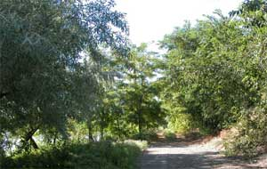
2001
Common Hackberry - Celtis occindentalis
Chokecherry - Prunus virginiana cvi
Russian Mulberry - Morus alba tatarica
Apple Serviceberry - Amelanchier x grandiflora
Purple European Beech - Fagus sylvatica purpurea
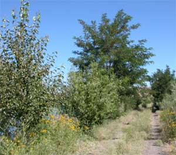
2002
Turkish Filbert - Corylus colurna
Scotch Laburnum - Laburnum alpinum
Osage Orange - Maclura pomifera
Black Elderberry - Sambucus nigra
Cottonwood - Populus trichocarpa
Misty Blue Spruce - Picea pungens glauca, misty blue
Ponderosa Pine - Pinus ponderosa
2003 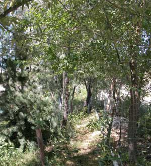
American Chestnut - Castanea dentata
English Yew - taxus baccata
Dawn Redwood - Metasequoia glytostroboides
Monkey Puzzle Tree - Araucaria araucana
Burning Bush - Euonymus alatus (shrub)
Red Flower Pea Shrub - Caragana roea (shrub)
Oregon Holly Grape - Mohonia aquifolium (shrub)
Arnold Dwarf Forsythia - Forsythia arnold dwarf (shrub)
2004
Golden Weeping Willow - Salix alba tristis
Purple Smoketree - Continus coggygria purpureus
Shasta Red Fir - Abies magnifica shastens
Deodar Cedar - Cedrus deodara
Black Hills Spruce - Picea glauca densata
Mugo Pine - Pinus nigra carmaniaca
Turkish Black Pine - Pinus nigra carmaniaca
Japanese White Pine - Pinus parviflora
Austrian Scotch Pine - Pinus sylvestris austrian
Horizontal Juniper - Juniperus horizontalus (shrub)
2005
Canada Red Chokecherry - Prunus Virginiana 'Canada Red',
Flowering Plum - Prunus Newport
Flowering Crabapple - Malus Thunderchild
English Walnut - Juglans regia carpathian
Pin Oak - Quercus ellipsoidalis
Crimson Laceleaf Maple - Acer palmatum dissectum
Maple, unknown - Acer sp.
Rocky Mt. Juniper - Juniperus scopulorum
2006
Paperbark Maple - Acer griseum
Red-leaf Japanese Maple - Acer Palmatum 'Atropurpureum'
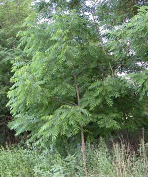
2007
Purple European Beech - Fagus sylvatica purpurea
Redleaf May Day Tree - Prunus padus berg redleaf
Schubert Chokecherry - Prunus virginiana schubert
Niobe Golden Weeping Willow - Salix alba Tristis
Hungarian Lilac - Syringa josikaea
Flowering Crabapple, Royalty - Malus Royalty
Utah Juniper - Juniperus osteosperma
Eastern Red Cedar - Juniperus virginiana
Lodgepole Pine - Pinus contorta latifolia
Giant Sequoia - Sequoiadendron giganteum
Mugo Pine - Pinus mugo mughus
2007 Betty's Island
Prairifire Flowering Crabapple - Malus prairifire (1 survived)
Japanese Kwanzan Flowering Cherry - Prunus serrulata kwanzan
Giant Sequoia - Sequoiadendron giganteum
Eastern Red Cedar - Juniperus virginiana (1 survived)
Mugo Pine - Pinus mugo mughus
Rocky Mountain Lodgepole Pine - Pinus contorta latifolia
Colorado Blue Spruce - Picea pungens glauca select
2008
Crabapple, Indian Summer - Malus sp.
Katsura Tree - Cercidiphyllum Japonica
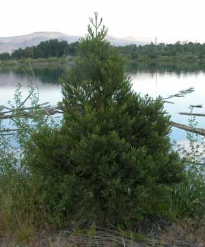
2008 Betty's Island
Crabapple, Indian Summer - Malus sp.
Nanking Cherry - Prunus tomentosa
Katsura Tree - Cercidiphyllum Japonica
Black Sea Fir (Turkish Fir) - Abies bornmuelleriana
White Fir - Abies concolor
Incense Cedar - Calocedrus decurrens
Port Orford Cedar - Chamaecyparis lawsoniana
Rocky Mt. Juniper - Juniper scopulorum
Colorado Blue Spruce - Picea pungens glauca
Majestic Blue Spruce - Picea pungens glauca Majestic Blue
Black Hills Ponderosa Pine - Pinus ponderosa scopulorum, Black
Hills
Giant Sequoia - Sequoia dendron giganteum
Red Osier Dogwood - Cornus sericea
2009
Japanese Red Leaf Maple - Acer palmatum atropurpureum
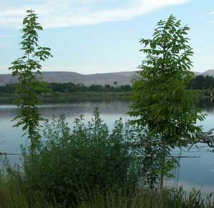
2009 Betty's Island
Krauter Vesuvius Flowering Plum - Prunus cerasifera
Japanese Flowering Quince - Chaenomeles japonica
Tam Juniper - Junipeus sabina tamariscifolio
Australian Black Pine - Pinus Nigra
Colorado Blue Spruce - Picea pungens glauca
Apache Colorado Blue Spruce - Picea gungens glauca apache
2010
Flowers, a lot of them (seeds)
2011
Giant Sequoia - Sequoia dendron giganteum
Western Red Cedar - Thuja plicata
Japanese Red Cedar - Cryptomeria japonica
Niobe Golden Weeping Willow - Salix alba Tristis
American Elderberry - Sambucus canadensis
Whatdaya mean these trees look ordinary? These ordinary trees look like they were planted in rocks, faced the teeth of beaver, and survived !
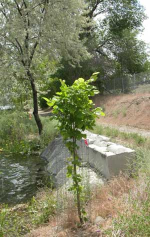
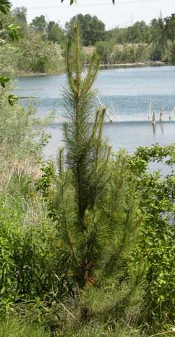
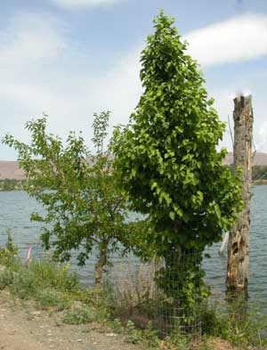
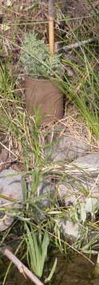
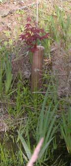
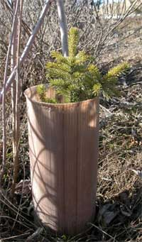
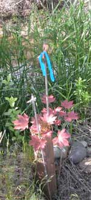
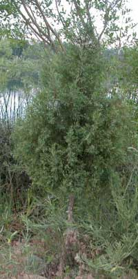
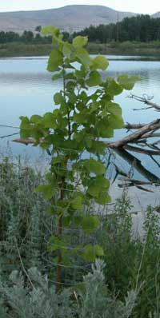
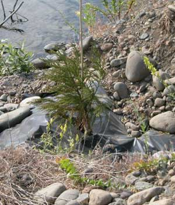
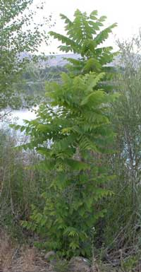
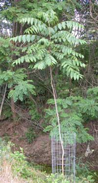
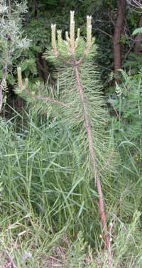
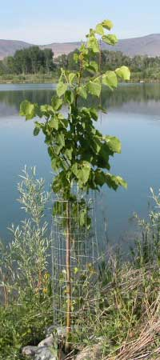
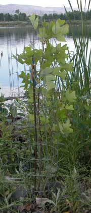
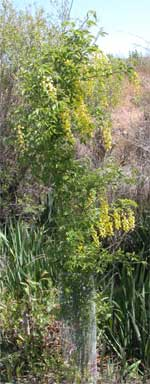
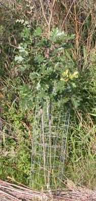
Oregon Oat, on the immediate left.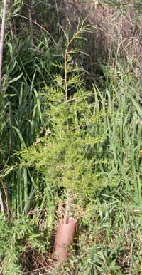
Ginko below.
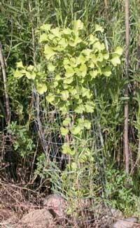
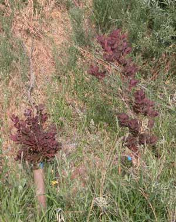
Purple Smoketree, and Bald Cypress.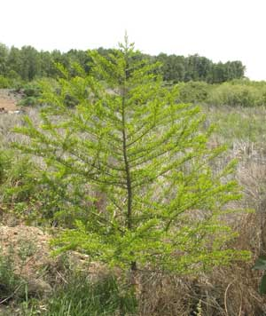
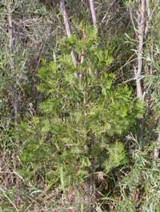
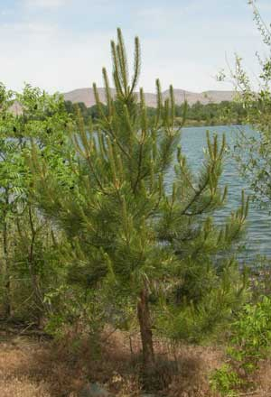
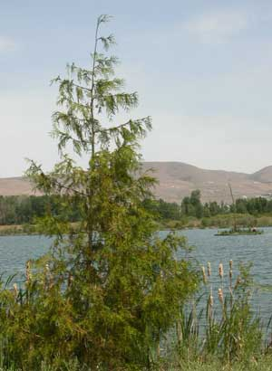
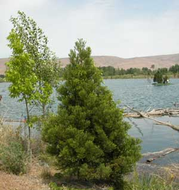
Barney's Island
Betty's Island-1
Betty's Island-2
Betty's Island-3
Betty's Island-4
Betty's Island-5
Betty's Island-6
Pebbles Island
Aerial photos
Neighbors
History
Swans
Birds
Trees-2
Trees-3
Lake
Links